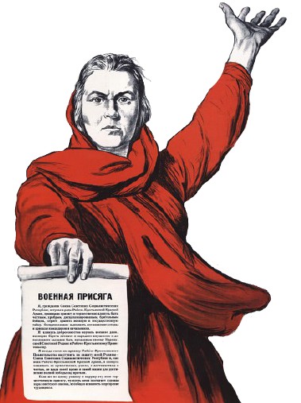

Архіў
На нашым сайце ёсць архіў з газетамі, фатаграфіямі і франтавымі лістамі ваенных гадоў. Архіў пастаянна папаўняецца, каб
ушанаваць памяць пра ўдзельнікаў Вялікай Айчыннай Вайны!
ФОТААЛЬБОМ
Фотаздымкі ўдзельнікаў Вялікай Айчыннай вайны сабраны ў нашым архіве. Мы рэгулярна дадаем новыя фатаграфіі ў архіў!
ГАЗЕТЫ
Дзякуючы ваеннай прэсе, ў савецкіх салдат ўздымаўся баявы дух і яны яшчэ мацней верылі ў перамогу над фашысцкімі
захопнікамі.
ЛІСТЫ
Лісты ваенных гадоў захоўваюць памяць пра тыя дні. У іх ёсць усё: кароткія апавяданні пра вайну, вершы, пажоўклыя
фатаграфіі ваенкараў, выразкі з баявых лісткоў і газет, словы кахання да сваіх блізкіх і мары аб пасляваенным шчасці. У
многіх сем'ях беражліва, як рэліквіі, захоўваюць лісты бацькоў і дзядоў.
ПАРАДЫ
Фотаздымкі ўдзельнікаў Вялікай Айчыннай вайны сабраны ў нашым архіве. Мы рэгулярна дадаем новыя фатаграфіі ў
архіў!
РАДЫЁЗАПІСЫ
Дзякуючы ваеннай прэсе, ў савецкіх салдат ўздымаўся баявы дух і яны яшчэ мацней верылі ў перамогу над фашысцкімі
захопнікамі.

А вы ведалі што ...
Ідэя стварэння зборнай выявы маці, якая заклікае на дапамогу сваіх сыноў, прыйшла да Іраклія Майсеевіча ў галаву зусім
выпадкова. Пачуўшы першае паведамленне Саўінфармбюро аб нападзе фашысцкай Германіі на СССР, жонка Тоідзе Тамара
Тэадораўна ўбегла да яго ў майстэрню з крыкам «Вайна!». Уражаны выразам яе твару, мастак загадаў жонцы замерці і тут жа
пачаў рабіць накіды будучага шэдэўра.
Даведайцеся шмат новага пры праходжанні тэста!